git --versiongit version 2.34.1In economic research, it is common for our projects to last a number of years, include a number of quite separate analyses, and potentially include multiple people working on code and writing. For this reason, it is important to us that from the outset we think quite carefully about how we should best organise our work to ensure that we work as efficiently as possible, and to facilitate work and replication of results within teams. A well designed project and work flow will also make it considerably easier for other researchers to replicate and extend our work.
In this class we will talk about good coding and project management practices in an applied way. Often I will simply provide an overview of key considerations, before exploring together the structure of a project (in R). While these notes will provide an overview of many of the considerations, we could spend considerably more time on this theme, and will return to these issues throughout the rest of this course. There are a range of other resources here which are more complete in their coverages of these themes, and I direct you to them if you would like to read further. These include:
Turrell (2023): “Coding for Economists” The sections on coding and workflow are particularly relevant for this class.
Gentzkow and Shapiro (2014): “Code and Data for the Social Sciences: A Practitioner’s Guide” These notes provide a very nice overview of the key elements in empirical projects, particularly in thinking about working within teams.
Ristovska (2019): “Coding for Economists: A Language-Agnostic Guide to Programming for Economists” These slides focus in particular on coding style and best practices.
A (stylised) economics research project may consist of the following steps:
Data collection
Data cleaning
Analysis and generation of results
Writing a paper and slides
Generation of replication materials
It is unlikely that one could (or would) want to use a single tool to complete all of these tasks. A somewhat complicated project may consist of the following type of tools for each step.
Data collection: Webscraped with Python
Data cleaning: Some scripting language, eg Stata, R, Julia, Python, MATLAB
Analysis and generation of results: Scripting language, as above
Writing a paper and slides: LaTeX and pdflatex compiler
Generation of replication materials: All housed in a Makefile, or very clearly documented in your README file.
You may note that the above steps could largely be done in a single language, but this list is used to provide the point that often in practice this is not what turns out to happen. Given this, when we are planning our projects, our solutions should be able to jump across languages if necessary.
Likely what we would like to do here is:
Automate this process completely or as much as possible
What happens if next month we want to update at step 1, eg grabbing new data?
And what if later a referee wants us to use an alternative method of data cleaning at step 2?
“Remember” what was being done in previous versions of code when changes are made to revert to old results if necessary
The first of these is more about designing an efficient replication process (for example using a Makefile or overview file) which we will discuss here, while the second is more about “version control”, which we will discuss below.
As much as possible, we should seek to avoid any manual procedures in our workflow. This includes things like manually copying regression outputs to tables (we will discuss how to automate in a few weeks), manually updating figures in documents, and also the need to remember which order to run scripts in to generate final output. It is good practice to have some way to run a single script which does everything we need from start to finish.
One particular way to do this is by using Make a Unix tool which specifies the full path a project follows, implying that rather than having to go through a workflow piece by piece, one can simply run the make file with a single command. The value added of make is that it only runs steps which are necessary If nothing prior to step
has been altered, make will see this and only run steps \(x\), \(x+1\), \(\ldots\) A very complete discussion of Make with examples is provided by Jesús Fernández-Villaverde. We won’t discuss this extensively here because it is specific to a single operating system, but you may wish to check it out. Similarly, for windows, in their chapter 2 Gentzkow and Shapiro have a suggestion for Windows systems of using a shell script to automate workflow. Below in an empirical example we will see a simplified version of this in R
At some point during your research it is exceedingly likely that you will lose access to your hard drive and any work saved on it. Whether this be because some component on your computer breaks or because you lose your computer or a hard drive, it is extremely likely that you will lose access to your hard drive at some point (or multiple points) during your research career. For this reason, it is absolutely fundamental that you view backing up your work as an integral part of your research workflow. You may have some syncing tool which does this automatically, and if this is the case I would encourage you to check with great frequency that it is indeed backing up as you believe. Alternatively, you may wish to manually back up your discs on external drives. Tools such as rsync provide efficient ways to do this. You should also consider the importance of having redundant back-ups, so that if one back up does not work as you believe, you still have another back-up in place. At every specific moment in time I would encourage you to be sure that if your computer stopped working at that moment that you would not lose more than a few hours work, and hopefully no work at all.
In line with the point on workflow above, we should aim to structure our projects in a logical fashion. At a minimum, projects should be located in their own directory, and should separate raw data, source codes, any intermediate data, and results. In the example at the end of this class we will see a structure which does these things adequately.
A fundamental part of any research project is (global) documentation. This documentation should provide us, or other users of our project, an immediate idea of the structure of our project, how to get up and running with the project, and how to replicate our work.
For this reason, we should always accompany our projects with a README file, which should be located in the top directory of our projects. README files provide giving global instructions relating to a project, explain elements such as the procedures which should be followed to replicate a project from start to finish, any external libraries needed, directory structure, etc. These should be the first thing you look for when you download a file to understand key elements of a project. If you cannot find a README, this may be evidence that you should doubt the code in a project. In general, while these files are known as README files, they may be named things like README, README.TXT, READ.ME (all likely readable with a text editor), or some other file format, like README.pdf, README.doc, or, in the case of markdown README.md. A template for the type of things which we might expect to be in the README is available here.
When our projects become slightly more complex, we will wish to use some sort of version control software which will allow us to keep track of changes in projects, as well as seamelessly collaborate in teams. Arguably the most common way to do this now is via git, often using the online platform github.
One argument for using git is that it avoids issues like those laid out in the comic below! Using git is great to provide a full track of all the code we have written in all iterations, allowing for us to generate branches to try new things and remove things that we no longer want, while still maintaining a full record of the history of our work. More generally however, git also allows us to collaborate with others, working on code together in a decentralised way, and then bringing things together, for example on places like github. We will explore some of the practical elements of git in our next tutorial together.
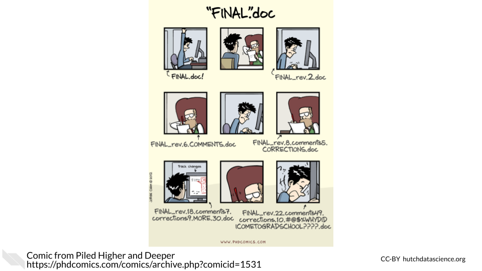
To see some ideas about version control we will explore git and github, and go through a number of the steps here.
Information on installing git can be found here. I would ask that you would follow these instructions to get a working implementation of git on your machine. While there are GUIs available, by far the most flexible way to deal with git is via the command line, which is why we will introduce it this way. You can access the command line directly through VScode if you do not have simple access to the terminal on your machine, or else on Linux and Mac operating systems it is reasonably trivial to access the command line. If you are working on Windows, you may wish to install git bash as a way to do this. The terminal acts as the conduit through which our git commands can be issued, and so provided that you have some way to do this, you should be fine!
After we have some way to access git, let’s first just confirm that we effectively have git installed, which we can do with the command below:
git --versiongit version 2.34.1Provided that we get some output printing a version number (which will depend upon when you installed it), this implies that git is installed. If you get some other message such as 'git' is not recognized as an internal or external command, operable program or batch file. (or some other message suggesting git is not installed), you will need to return to the resources on git, and ensure that the installation has been completed.
If this is the first time you are working with git, you may want to complete some first time set-up procedures. While not strictly necessary, they will make interacting with github later on much easier, and so it is potentially worth at least setting up the basics now. In particular, we will want to tell git our username and email address. For the email address, we should use the same email which we will use to generate a github account, which ideally should be an email we plan to keep for an extended period of time. This can be done as follows:
git config --global user.name "Your name"
git config --global user.email youremail@example.comwhere “Your name” and the email should be filled in appropriately. We can confirm that this has been updated as follows:
git config --listuser.email=damian.clarke@protonmail.com
user.name=damiancclarke
init.defaultbranch=main
credential.helper=cache
core.repositoryformatversion=0
core.filemode=true
core.bare=false
core.logallrefupdates=trueDepending on your installation, you may see slightly different configurations, for example if some particular other settings are configured as default.
To have a quick look under the hood and where we will be going with git, you may wish to briefly consult the top-level manual which you can do with git --help.
git --helpusage: git [--version] [--help] [-C <path>] [-c <name>=<value>]
[--exec-path[=<path>]] [--html-path] [--man-path] [--info-path]
[-p | --paginate | -P | --no-pager] [--no-replace-objects] [--bare]
[--git-dir=<path>] [--work-tree=<path>] [--namespace=<name>]
[--super-prefix=<path>] [--config-env=<name>=<envvar>]
<command> [<args>]
These are common Git commands used in various situations:
start a working area (see also: git help tutorial)
clone Clone a repository into a new directory
init Create an empty Git repository or reinitialize an existing one
work on the current change (see also: git help everyday)
add Add file contents to the index
mv Move or rename a file, a directory, or a symlink
restore Restore working tree files
rm Remove files from the working tree and from the index
examine the history and state (see also: git help revisions)
bisect Use binary search to find the commit that introduced a bug
diff Show changes between commits, commit and working tree, etc
grep Print lines matching a pattern
log Show commit logs
show Show various types of objects
status Show the working tree status
grow, mark and tweak your common history
branch List, create, or delete branches
commit Record changes to the repository
merge Join two or more development histories together
rebase Reapply commits on top of another base tip
reset Reset current HEAD to the specified state
switch Switch branches
tag Create, list, delete or verify a tag object signed with GPG
collaborate (see also: git help workflows)
fetch Download objects and refs from another repository
pull Fetch from and integrate with another repository or a local branch
push Update remote refs along with associated objects
'git help -a' and 'git help -g' list available subcommands and some
concept guides. See 'git help <command>' or 'git help <concept>'
to read about a specific subcommand or concept.
See 'git help git' for an overview of the system.We can see from this that git is relatively light in terms of the number of different commands we may need, and indeed, probably much of the time we are interacting with git it will be with just a small sub-set of these commands. We will start to get into this now…
Let’s imagine that we are starting a big software project, and know that we will need version control. This may involve multiple people, but for the time being, we may only just be working by ourselves on our local machine. To see a very contrived example, let’s generate a new file called myproject, and then within this project begin our first git repository.
mkdir myproject
cd myproject
git initInitialized empty Git repository in /home/dcc213/trabajo/Teaching/Exeter/ResearchMethods-I/site/myproject/.git/At times we may wish to begin a git project before we generate any files at all, but it is also not a problem to start a project in a directory which already contains files. We have seen that starting our git respository with git init provides us a message that an empty repository has been generated. This has been initialised in a new directory called .git. You may note that if you are in the directory where the repository is located and type ls we will not actually see anything:
lsand this is because directories starting with . are hidden, both when typing ls as well as when looking at them in folders. However, if we ask ls to show us everything, we will see that it is there:
ls -a.
..
.gitWe do not need to know precisely what goes on inside the .git folder, just that this will keep track of our project and its changes if instructed. We can see in a broad sense what git is seeing with git log and git status. When we have not yet done anything git log will return an error as below:
git logfatal: your current branch 'main' does not have any commits yetwhile git status will, as yet, suggest relatively little is happening:
git statusOn branch main
No commits yet
nothing to commit (create/copy files and use "git add" to track)Because we have not yet added any code, there is not much that git needs to keep track of!
Let’s now add a very simple first code, and see what happens. Below we will just generate a simple plain text file, consisting simply of the words “Hello world!”.
echo "Hello world!" > file1.txtWe have stored this in a file called file1.txt (using notation we know from our work in BASH). Now, let’s see what the git status tells us:
git statusOn branch main
No commits yet
Untracked files:
(use "git add <file>..." to include in what will be committed)
file1.txt
nothing added to commit but untracked files present (use "git add" to track)Now we see that git tells us there is a file there, but it’s not being tracked. If this is part of the code of our project, we will want to track it so we can have a history of how it evolves, and roll back to prior versions if necessary. We will now “stage” this file, which means it could be committed to our git repository, and enter the version control history.
git add file1.txt
git statusOn branch main
No commits yet
Changes to be committed:
(use "git rm --cached <file>..." to unstage)
new file: file1.txtThe key line above with git add filename which tells git to put file1.txt into the “staging area”. This allows us to do a number of things such as see any differences between staged and unstaged versions of the file, and, fundamentally, commit our files to the git repository. We do this below with git commit.
git commit -m "Adds hello world file"[main (root-commit) 522eae3] Adds hello world file
1 file changed, 1 insertion(+)
create mode 100644 file1.txtThe syntax of git commit is to first write the command, and then -m followed by a commit message. This provides us a brief snapshot of what we’ve done, and something that will hopefully jog our memory later on. If we type git commit without specifying a message inline with is fine, but our command line will open an editor and we will need to type one. What we have done with git commit is add our code to the version control history of the project. If we now type git status and git log we will see a few changes, with the most important being the change in git log.
git status
git logOn branch main
nothing to commit, working tree clean
commit 522eae36ecc52f3c1ca2e2601edb93701ba16b4c
Author: damiancclarke <damian.clarke@protonmail.com>
Date: Fri Dec 5 10:25:28 2025 +0000
Adds hello world fileWe can see at the end that we have a new commit which is indicated by a long string of letters and numbers, as well as information on the author and date of the commit.
Essentially, we should commit code to our repository every time we have made a concrete change. A very nice discussion of commits, along with commit messages is available here. This commit will be available forever after, and even if we later make many changes, we will always have the option to see the code as it existed at this moment in time, and roll back to it if we wish.
Let’s imagine that we now need to add another piece of code to our repository, which depends on some new output of our old file1.txt. Below we will add a new line to file1.txt, and then stage the changed version of file1.txt:
echo "Some addition outputting something for file2.txt" >> file1.txt
git add file1.txt
git statusOn branch main
Changes to be committed:
(use "git restore --staged <file>..." to unstage)
modified: file1.txtWe will not commit this yet, because we want to also write file2.txt and then commit the two changes together as a single new function in the code.
echo "A new file taking input from file1.txt" >> file2.txt
git add file2.txt
git commit -m "Adds new function file2 which interacts with file1"
git status[main a561635] Adds new function file2 which interacts with file1
2 files changed, 2 insertions(+)
create mode 100644 file2.txt
On branch main
nothing to commit, working tree cleanWe have now added this new commit to our repository, and if we look at the git log below, we will see that both versions of the files are tracked. However, if we look in our main folder (with ls), we will see that we do not have any bloat or have to worry about anything in particular about prior versions of the files. We can get at them if we want or roll-back to any previous versions, but if we don’t ask for anything, we will just see the most recent versions of all our files.
git log
lscommit a561635cba6f3b00db70566652ccb60925779850
Author: damiancclarke <damian.clarke@protonmail.com>
Date: Fri Dec 5 10:25:28 2025 +0000
Adds new function file2 which interacts with file1
commit 522eae36ecc52f3c1ca2e2601edb93701ba16b4c
Author: damiancclarke <damian.clarke@protonmail.com>
Date: Fri Dec 5 10:25:28 2025 +0000
Adds hello world file
file1.txt
file2.txtWhile this is all well and good for keeping track of our own work, it does not really show case much of the true power of git, which is for working in a dencentralised way among potentially many different individuals. Let’s now see how git can interact with github. I will assume that you have now generated a free github account based on the email indicated above. We will now talk through a few things:
Probably much of our work will be on point 1, especially early on in our usage of git, but as you start to work on more collaborative projects, you may see that gradually you are spending more on point 2 above.
Let’s now imagine that the project we have created above is something that we want to share publicly, either so that people can see and use the code, or so that we can collaborate with others who may also contribute to the project. We can do this from within github with the + symbol pictured below, and then indicating “New repository”.

This will then provide us with a place to indicate a repository name, as well as whether we wish to have this be public or private, as well as optionally whether we would like to include a License file to start. If we are starting a fresh repository without any code to push from our machine we might want to add a license file, otherwise we will probably prefer to begin with an empty repository to push everything we have locally on our machine into. Once we are satisfied with the details below, we can click “Create repository”.
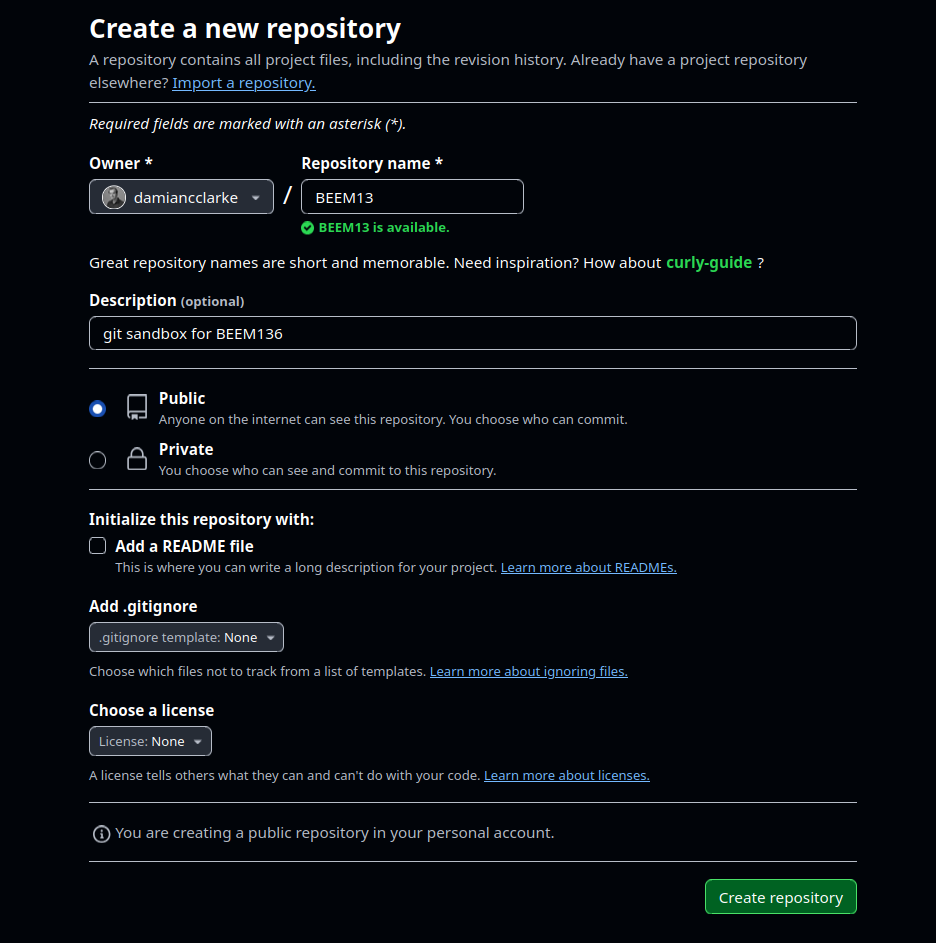
Now we need to go about including the code which we have stored locally on our machine into this repository. If we have a git repository already located on our machine that we wish to incorporate into this github repository, we need to take a few steps. Let’s see this with the repository we have already set up previously. Within this repository on our machine, we will need indicate that we wish to contribute to a remote repository. We do this below, where the remote location will depend on our username and github repository name:
git remote add origin https://github.com/damiancclarke/BEEM136If things work as planned, there should be no message here, but if we want to confirm that something has occured, we can check this as below.
git remote -vorigin https://github.com/damiancclarke/BEEM136 (fetch)
origin https://github.com/damiancclarke/BEEM136 (push)Once we have done this, we are close to ready to “push” our code locally to the place we have indicated as “origin”. To do this, we will first ensure that we have a branch called “main” on our machine. Because we only have one branch, it may be that by default this is called main, but the below code ensures that we know where we are pushing any code from. After we have done this, we will “push” the code that we have locally on “main” to the repository that we have on github which we have called “origin” above.
git branch -M main
git push -u origin mainUsername for 'https://github.com': damiancclarke
Password for 'https://damiancclarke@github.com':
Enumerating objects: 10, done.
Counting objects: 100% (10/10), done.
Delta compression using up to 8 threads
Compressing objects: 100% (6/6), done.
Writing objects: 100% (9/9), 882 bytes | 882.00 KiB/s, done.
Total 9 (delta 1), reused 0 (delta 0), pack-reused 0
remote: Resolving deltas: 100% (1/1), done.
To https://github.com/damiancclarke/BEEM136
28fbef7..23334ef main -> main
Branch 'main' set up to track remote branch 'main' from 'origin'.When we do the push above, we need to be able to access our repository on github. As this is of course sensitive (we would not want anybody to be able to push to our repsitories), git will require a password. Some information related to possible alternative routes to do this from github are available here, and note that the password that github requires is not actually the password we use to login, but rather a personal access token which can be generated as discussed here. While it is a bit of hassle to have to do this additional step to push code, it is safer, and once it has been done once, we can use the personal access token for a long period of time, until we set it to expire.
Once we have done this, and given that we will have this repository available publicly, we may wish to add a README file which will provide some information on this repository to people who look at our repo on github. We can do this by adding a file called README.md. If we write this file using github’s markdown, it will be visualised well online. Let’s imagine we have edited some README.md file, we can then stage and commit it below.
git add README.md
git commit -m "Incorporates README to our repo"Username for 'https://github.com': damiancclarke
Password for 'https://damiancclarke@github.com':
[main 00d2f26] Incorporates README to our repo
1 file changed, 1 insertion(+)Now when we look on github, everything we have done so far will be there! This should look something like the below:
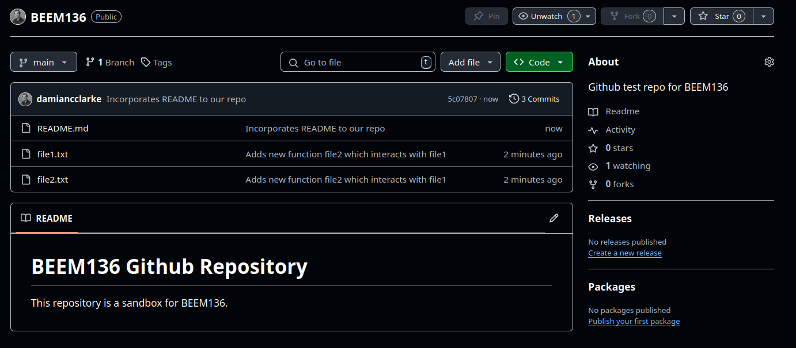
If we look at individual codes, we can also see the full history, with an easy-to-use interface showing exact changes between any versions. In the below screen shot for example we see exactly what change was made when we moved from our first to second commit at the beginning of this project. In practice, when commits involve more lines of code, this feature can come in very handy.

At this stage our local git repository and github repository are in sync. At the beginning and at the end of any working session, we should always ensure that this is the case. If you are collaborating on a project with others, it is possible that by the time you start a new working session, your collaborators may have made some changes and pushed it to the github repository. In this case, we should always first ensure that we are up to date with all the recent updates from github before we make any other changes ourself. The nice thing about it is that you can use git pull even when in doubt. In this particular case, no change will appear because we are already in sync, and no one else has edited this repository.
git pullAlready up to date.As a final point, let’s see how we could contribute to an existing repository on github. This may occur for a number of reasons. It may be that there is some piece of software that we frequently use and which we haved edited slightly to improve performance, and want to suggest this as a general feature to the code’s maintainer. Or it might be that we are working in a team, and want to incorporate work into the repository of the project the team is working on. Regardless of why, if we wish to do work on the code, the first thing we will do is “fork” the repository on github. In order to give an idea of how this looks on both sides (from the maintainer of the repository, and the person who forks it), below I am working with another github account. This new account has no copy of the repository to begin with. Any screen shots below where github is coloured white are based on this new account which is copying the repository, and which wants to contribute. Any screen shots which are coloured black are showing things from the point of view of my original account (the account which maintains the repository).
The first thing the “contributor” must do is simply take a fork of the repository. This requires no permission as anyone can work with public code on github, and places a fresh copy of the respository on the contributor’s github repository. At this point, any changes made in that repository will be limited only to the contributor’s repository. Below we see two screen shots showing how one makes a fork:
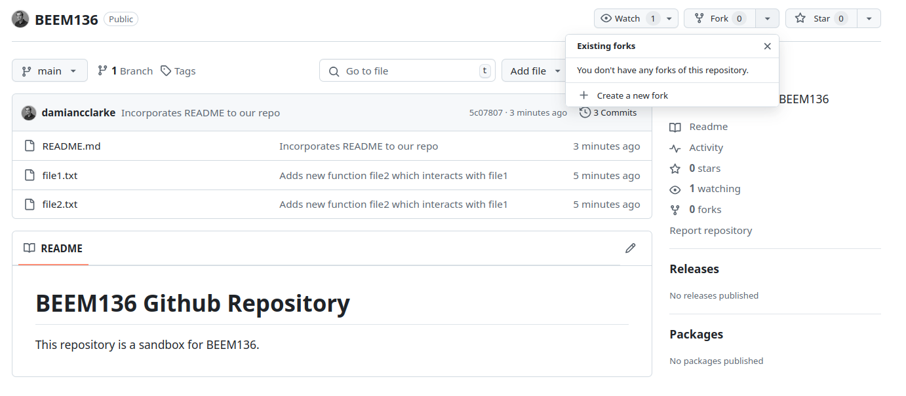
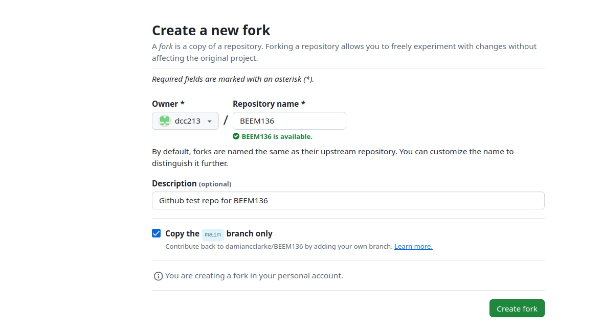
Once we have forked this, we will see that a copy of this repository now exists on our github profile. To actually work with this repository, we probably want to copy it locally to our machine. We actually could develop code directly on github’s site, but in practice we will probably want to have available tools on our operating system, so we will assume we want to develop it locally. To do this, we use git clone. This simply puts a copy of the indicated repository and its git history on our machine. We can see that when we do this, if we type git log we see the entire git history of the repository, including the prior versions which the original author has published.
git clone https://github.com/dcc213/BEEM136Cloning into 'BEEM136'...
remote: Enumerating objects: 18, done.
remote: Counting objects: 100% (18/18), done.
remote: Compressing objects: 100% (12/12), done.
remote: Total 18 (delta 4), reused 16 (delta 2), pack-reused 0
Receiving objects: 100% (18/18), done.
Resolving deltas: 100% (4/4), done.Now that we have cloned the repository, we can get to work. In the interests of brevity, let’s simply generate some new file. Below we have a look at what is in the repository, and then generate a file called file3.txt.
ls
echo "Adding a third test file" > file3.txtfile1.txt file2.txt README.mdNow let’s stage the file and commit the file to our git history. What this is doing is incorporating the file into our git history locally. This is not yet incorporated into (a) our version of the github repository or (b) the original developer’s copy of the github repository…
git add file3.txt
git commit -m "Adding a third file"[main ab83a99] Adding a third file
1 file changed, 1 insertion(+)
create mode 100644 file3.txtTo push the changes to our copy of the project is easy, and we can do it in the same way we discussed above when seeing how we push to our own projects. Indeed, because we have already done a git clone, git knows how our local branch and github branch correspond, so we do not need to tell it anything more than that we wish to push our local changes. We do this below:
git pushUsername for 'https://github.com': dcc213
Password for 'https://dcc213@github.com':
Enumerating objects: 4, done.
Counting objects: 100% (4/4), done.
Delta compression using up to 8 threads
Compressing objects: 100% (2/2), done.
Writing objects: 100% (3/3), 300 bytes | 300.00 KiB/s, done.
Total 3 (delta 1), reused 0 (delta 0), pack-reused 0
remote: Resolving deltas: 100% (1/1), completed with 1 local object.
To https://github.com/dcc213/BEEM136
9001f27..ab83a99 main -> mainOnce we do this, we can see that in the version of the contributor’s repsotitory, the changes are now incorporated:
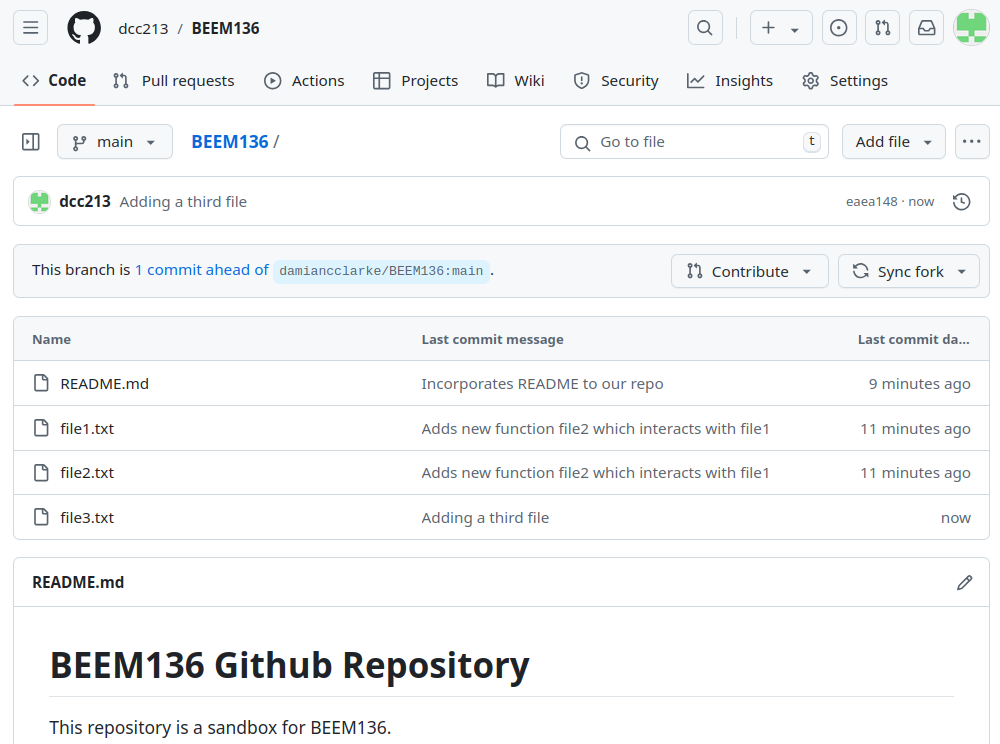
This change will only affect our code on github. What we haven’t yet done is suggest to the original developer that we wish to incorporate this change into the original code. If our code is incorporated into the original developer’s repository, then anyone else who interacts with the code in the future will also have our commit. To ask the original developer to consider incorporating our code, we open a “pull request” on github. This is us asking the maintainer to “pull” our changes to their code. Below we can see how this looks.
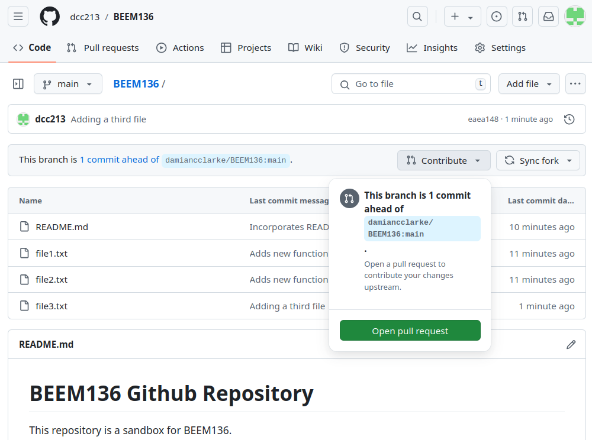
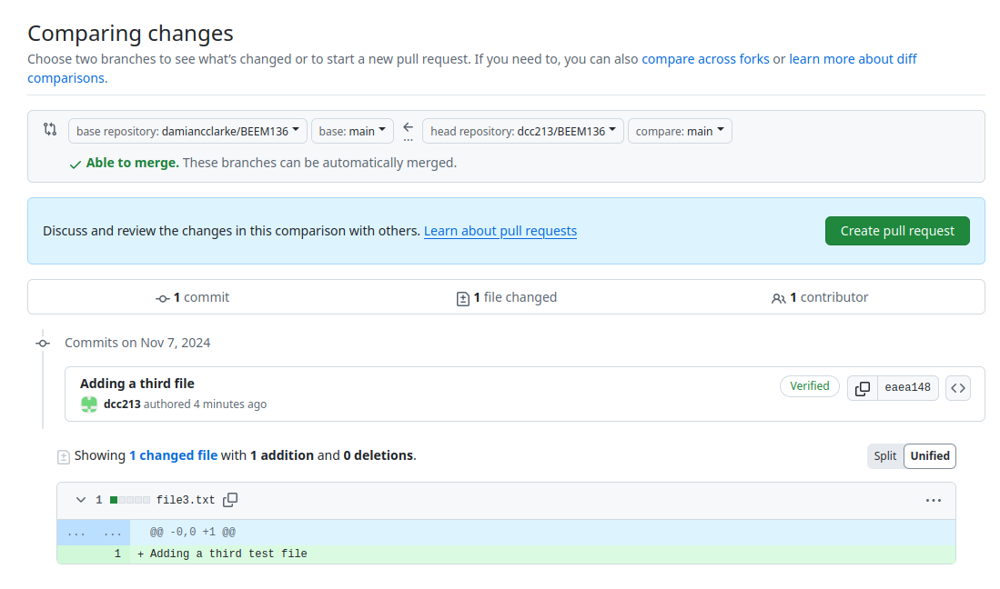
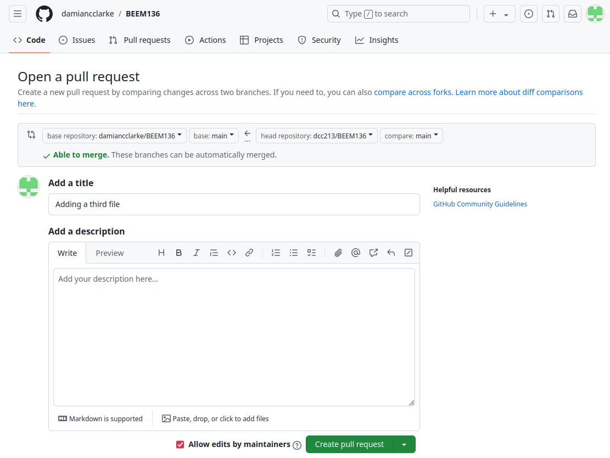
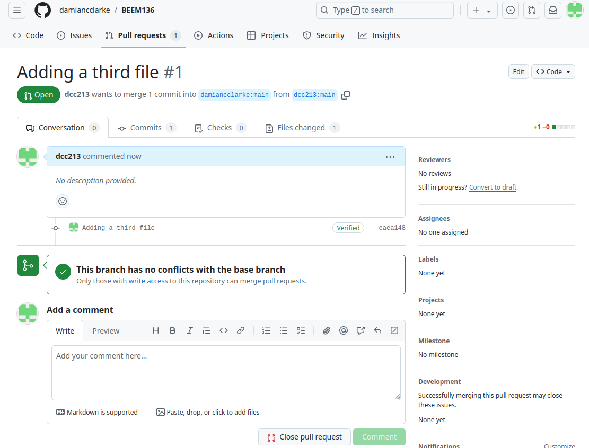
There are multiple stages in this process (hence the four screen shots above), but essentially, provided that there are no conflicts on code edits (ie no other changes to the same area of the code we have edited have been made to the original repository), we can simply click through and create the pull request.
Then it is up to the maintainer to see if they wish to accept our pull request. Provided they do, they can review the code and click on “Merge pull request”, as below:
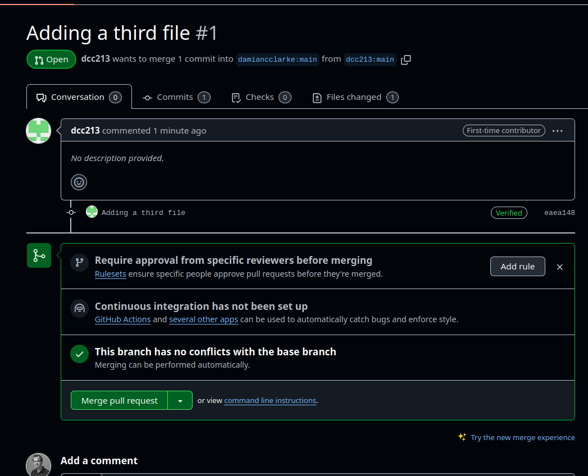
This will then result in changes to the published repository, where you can note that the version of the file which has been edited by us now has our commit message. This will now be available in the original repository, and will be the new version which anyone else works with.
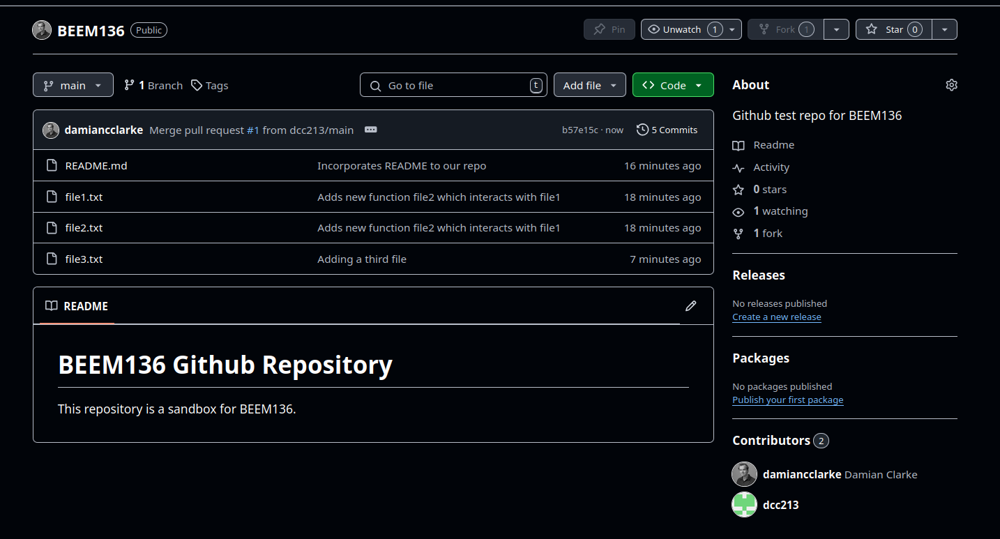
With this example, we have seen a brief introduction to git and github, as well as (hopefully) what value it offers us to keep track of our projects and collaborate with others. A nice thing about git is that it is a reasonably small language, and once we have learned these basics, we can actually get quite far. There are other things which can be done such as opening up branches and working on elements of research projects in parallel and things like this. If you would like to read more, you could perhaps explore further resources such as this website.
Within individual codes in projects, we will also wish to maintain a consistent style and clear documentation. There are a number of frequently used stylistic choices in programming, though often these aren’t based on explicit (syntactic) rules. For example, people have an ideal directory structure they like to use for projects. And certain default choices are used for data management (eg commas as delimiters). Spacing in code is often user-specific (though there are languages where rules are in place), and ontelligent variable naming can simplify work considerably. In many cases, even if there are no rules, internal consistency is key as this allows for re-use of standardized code.
In some languages, spacing is a big thing. For example, Python uses indentations in code to find the end of loops and conditional statements. Another language, Fortran, reserves initial spaces in lines for particular keys or statements, and these cannot be used freely. As we have mentioned before, often, you see codes which do not exceed 80 characters per line (and this is my preference). This has its precedence from days where codes were stored on punchcards and could not exceed 80 characters (see below), but in general even on the screen this is useful, as it avoids confusion of reading across long lines in our text editors.
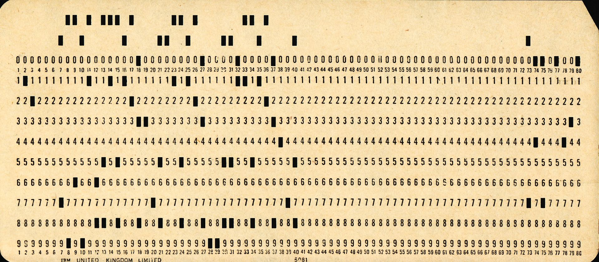
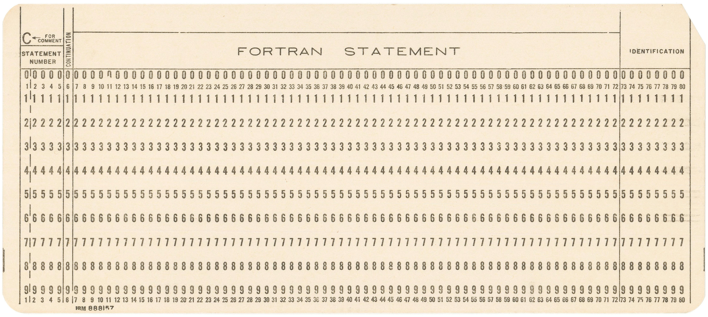
Other things which are easy to control can make an important difference to the way our code is understood. Good variable naming can make things a lot easier, and bad variable naming can be a disaster. For example, consider a binary variable for male/female, and the potential names var1, gender, or female. There are particular standards one can elect to follow, eg snake_case or camelCase, and consistency is good, though this is something which depends entirely on your own desires. Some languages also permit the bundling of additional information with variables (like variable labels), and then even more information can be contained, though it is important to note that you should not rely on such constructs, because when data is stored in csv or other neutral file formats these labels will generally not be considered.
Wherever possible automation (avoiding human interaction) and abstraction (writing code that is flexible for many circumstances) should be embraced. As an entirely arbitrary example, imagine arriving at an expectation using the law of iterated expectations. The law of iterated expectations is a mathematical formula which states that:
\[E(Y) = \sum_{x\in\mathcal{X}}E(Y|X=x)\Pr(X=x)\]While the precise details of the law are not what is important for us here, it is enough to note that if we wish to generate an expectation of some variable \(Y\), we could do this by working with the expectation of \(Y\) over levels of some other variable \(X\). To note how automation and abstraction come into play, consider three ways we could implement this formula:
We could tabulate X and then calculate the expected value of Y at each level of X by hand.
But it would be better to get a list of all values of X and iterate through these to take the expected value of Y at each level automatically (AUTOMATION).
Though best of all, we could generate a function to do this for any two variables of interest (ABSTRACTION).
The use of functions, or stand-alone programs, is a clear example of automation and abstraction. If there is some particular process which we find ourselves repeating a lot, we would likely be well-served by writing a function which does this process which we can then use in the future. This allows for us to focus our attention on perfecting this once, and then use optimized code in the future. We will explore this in our end of class example.
In the process of writing our code, we will likely spend a considerable portion of time debugging, and should also seek to be constantly testing and profiling our code. These three concepts are different, and in summarised form refer to the following:
Testing: My code runs, but does it do what it should?
Debugging: My code does not run/compile. Why?
Profiling: My code runs very slowly. Why?
In terms of testing, this is a constant process which requires vigilance and some creativity to do well. In empirical applications, it is often a good idea to see if a code returns ‘correct’ values in simulated data. We will discuss this towards the end of this course when we discuss using Monte Carlo simulations as part of a work flow. We should view testing as something that should be done modularly, not just at the end of a project. Rather, each script should be tested in a stand-alone way, and similarly, each argument in a function should be tested. Wherever possible, consider whether you can proactively build in tests into code. For example, if an argument of some function is the rate of unemployment, check that it is bounded between 0 and 100, otherwise generate an exception. Similarly, if we expect some variable to only take integer values, confirm that this is the case, and if not go back and check data.
Unlike testing, debugging refers to finding errors that are causing a script not to run. Most languages and compilers (especially those that we will use) have very good inbuilt debugging tools, which we have already been exploring. You should read error messages and consult user’s manuals as a first option when bugs come up. In the worst case scenario, pasting the exact error message into a search engine may provide relief, and asking chatGPT or some other large language model about why errors occur can be quite illustrative. Note that sometimes programs issue warnings but still allow a script to run. These warnings should be at least looked into to, as often the best case is that they will show inefficiencies. Finally, do not think that just because a script runs it is correct. Always go back to testing.

Finally, the issue of profiling is about finding ‘hot spots’ in a code. If a code is slow to run, it may be that there is a bottleneck that can be optimized. But note, any concerns about efficiency only come after concerns about accuracy. Only begin optimizing when you are sure your code is correct. Many languages (or IDEs) have profilers which allow you to profile very easily (eg R Studio, Spyder). In languages where these aren’t present, you can run time tests portion by portion. While we generally would like our code to run fast, it’s worth keeping in mind that we should not over-optimize our code. There is a trade-off between machine time and programmer’s time, and often we may be happy for our code to run a bit more slowly on the computer if it saves us time and effort, especially if they are codes we do not think we will run many times.
Previously we have discussed documenting our projects “globally” with a README file. However, we should also invest in documenting “locally” by commenting within scripts. All programs we will likeley work with have a way to write comments. These are points implied for human readers, that the machine will ignore (hence syntax of the comment itself can be human language). It is likely in your research career that you will spend more time reading and understanding code than actually writing code, which makes clear the value of documenting your code in an intelligible way. Comments should be used throughout code wherever something is not absolutely clear, but should not be used when a line is self explanatory. If you are ever unsure of whether or not to document something, it is worth erring on the side of over-documenting rather than under-documenting! And in the same way that you maintain your code, you should see it as an important task to maintain comments in code.
One final thought to note here is that while it is extremely important to carefully document our code, we should not do so prematurely. We should always document our individual files in the way discussed here. However, we likely will not want to put together a comprehensive README file at early stages of a project given that many projects will not reach a stage where we are distributing them publicly, or with coauthors. At early stages, a very basic README will be enough. However, as soon as a project passes an initial exploratory phase, and appears to be something that we will continue with, we should follow complete documentation procedures, and invest in maintaining our documentation.
A final element to note in thinking about project management and code management is the importance of replicability. This will be important to us as producers of research because we will generally write a paper over many months, and when we take up our code one day, we will want to start from exactly where we left off the day before. It will also be extremely important for our readers, and the scientific literature more generally. If another researcher wants to see what we are doing or extend our work, it is fundamental that they can run our code and precisely replicate what we are doing by running our code. For this reason, most journals now have an explicit replication policy and data editors who ensure that these policies are met, for example the American Economic Review, and Econometrica.
Beyond carefully testing and documenting our code, there are a number of other points we should be careful with to ensure that our code replicates without issues. In the case of any procedures based on pseudo random number generators (for example bootstrap variance estimates), we should be careful to ensure that we set the seed so that our “randomness” can be perfectly replicated. For an example of this, see the code below where we note that random draws are not the same across calls, unless the seed is first set.
rnorm(5)[1] -0.9219560 -0.1807026 0.7342716 -1.8680641 -0.3426949rnorm(5)[1] -2.8138263 -1.5280477 -0.8116031 0.6256428 1.4835027set.seed(1213)
rnorm(5)[1] -1.119929 1.041126 -2.497151 -2.239511 1.134902set.seed(1213)
rnorm(5)[1] -1.119929 1.041126 -2.497151 -2.239511 1.134902Another important thing to keep in mind is that packages at times evolve over time. Ideally all packages should maintain forwards compatability, but if for some reason a package changes, we would want to have a way to replicate our results based on earlier versions of these packages. At a minimum, in our documentation we should note exactly what versions of packages we are working with, which is something that we can easily consult:
packageVersion("ggplot2")[1] '3.5.2'packageVersion("dplyr")[1] '1.1.3'A more robust solution is to include the version of the programs that we use alongside our replication materials, potentially in a sub-directory of our source code. There are also a number of more formal options to allow us to do this. For R in particular this include package dependency management programs like packrat or checkpoint which allows us to download a version of all R packages as they were currently available at any specific past date. Somewhat similarly, Python allows for an entire environment to be easily mapped and replicated using virtual environments, which can then be easily replicated across machines. Finally, if you are seeking a more comprehensive solution beyond a single language, you may be interested in exploring Docker, which essentially provides a portable version of every piece of software you need for other individuals to use. We will not discuss this at much length here, but if you would like to explore this, the AEA Data Editor has a post on the use of Docker in replication materials. These elements may be good things to discuss in tutorial presentations!
As a simple example of some of these principles we will set up a structure of a basic research project in R. To do this, we will use the same example the we discussed last class, and as such will not focus so much on the what the code is doing, but rather on how the code is structured.
To begin, let’s set up a directory for our project consisting of three sub-directories: data, results, and source. Within results we will have a number of sub-directories, and within source we will have a directory where we will save the final version of the R libraries that we used. This project is available here as a zip file, but it may be preferable to set things up by hand.
list.dirs(path = ".", full.names = TRUE, recursive = TRUE)[1] "." "./data" "./results"
[4] "./results/analysis" "./results/macro" "./results/micro"
[7] "./results/sumstats" "./source" "./source/R" In the top level of our project we will include a README, structured along the lines of the below file.
--------------------------------------------------------------------------------
README.txt for PROJECT TITLE
Author 1, Author 2
email 1, email 2
--------------------------------------------------------------------------------
This project does...
The project structure is as follows.
|_ source/
|_ R
|_ results/
|_ sumstats/
|_ analysis/
|_ data/
To replicate this project you should simply run the code runAll.R located in the
source sub-directory. All results will be exported to the results sub-directory
and you can then compile the paper located in the main directory...
This project was run on R, version 3.6.3.
This project requires the following externally installed libraries:
- XXXXXX: version X.X.X
- XXXXXX: version X.X.X
- XXXXXX: version X.X.X
- XXXXXX: version X.X.X
For questions related to this code, contact email@address.com.Finally, within the source sub-directory we will have the following codes.
#---|----1----|----2----|----3----|----4----|----5----|----6----|----7----|----8
# runAll.R damianclarke yyyy-mm-dd:2023-10-22
#
# This script runs required codes for the project SHORT DESCRIPTION HERE. To run
#the script, simply change directory locations on lines 29-31 to the correspond-
#ing locations on your machine. If PREP is set to true data preparation scripts
#will be run. If SUMSTATS is set to true, descriptive statistics and graphs will
#be generated. If ANALYSIS is set to true, data analysis scripts will be run.
#
#
#
rm(list=ls())
require("dplyr")
require("readxl")
# Alternative 1 line call for multiple libraries:
x=c("dplyr", "readxl", "haven", "tidyr")
lapply(x, require, character.only = TRUE)
#-------------------------------------------------------------------------------
#--- (1) Define switches for running certain areas of code and define locations
#-------------------------------------------------------------------------------
PREP <- TRUE
SUMSTATS <- TRUE
ANALYSIS <- TRUE
source <- "~/trabajo/Teaching/Exeter/ResearchMethods-I/structure/source"
results <- "~/trabajo/Teaching/Exeter/ResearchMethods-I/structure/results"
data <- "~/trabajo/Teaching/Exeter/ResearchMethods-I/structure/data"
#-------------------------------------------------------------------------------
#--- (2) Run required codes
#-------------------------------------------------------------------------------
if(PREP) {
print("Running all data preparation code")
source(file.path(source,"dataPrep.R"))
}
if(SUMSTATS) {
print("Running all graphs and summary statistics")
source(file.path(source,"descriptives.R"))
}
if(ANALYSIS) {
print("Running all analysis code")
source(file.path(source,"analysis.R"))
}This first code is a single code which we can use to replicate the running of all of the portions of the project that are written in R. You will note that in this script we have indicated all of the directory locations that we will need, and indeed, this will be the only place that we will need to store these locations. They will then be passed along to other scripts run below. The second important element to note is that we are including a number of switches that can be set to TRUE or FALSE if sections of the code should be run. If any of PREP, SUMSTATS or ANALYSIS are not set to TRUE, then these elements of the code will not be run.
Finally, of note in the above code is that we have our first example where we have used some abstraction to make our code more generalised. Initially in lines 15-16 we are indicating that each of the dplyr and readxl libraries are required. However, this is repetitive, and for each additional library we will need to add another line. Instead, we can do this by first generating a list of all the libraries we require in line 19. Then, in line 20, we can use R’s lapply function to apply a specific function, in this case require(), to a list of arguments (each character set in x). Later, if we realise that we need to add another package, we can simply add this to x.
#---|----1----|----2----|----3----|----4----|----5----|----6----|----7----|----8
# dataPrep.R damianclarke yyyy-mm-dd:2023-10-24
#
# This script prepares a dataset which contains one line per municipality and y-
#ear for each of Chile's 346 municipalities over two years (2008-2009). Each li-
#ne contains the municipality's population of adolescent women, the number of t-
#een births, and whether the EC pill was available in 2009.
#-------------------------------------------------------------------------------
#--- (1a) Generate population file
#-------------------------------------------------------------------------------
population <- read_xls(file.path(data,"poblacionINE.xls"))
popTeens <- filter(population,
edad>=15 & edad<=19 & `Sexo (1=hombres;2=mujeres)`==2)
popTeens <- select(popTeens, Comuna, nombre_comuna, edad, a2008, a2009)
names(popTeens)<- c("Comuna","nombre_comuna","edad","2008","2009")
popTeens <- pivot_longer(popTeens, cols=`2008`:`2009`,
names_to="ano_nac", values_to="population")
popTeens <- popTeens %>% group_by(Comuna,nombre_comuna, ano_nac) %>%
summarise(
population=sum(population),
.groups = "drop"
)
#-------------------------------------------------------------------------------
#--- (1b) A function to do this
#-------------------------------------------------------------------------------
gen_pop <- function(data, age1, age2, sex) {
popTeens <- data %>% filter(edad>=age1 & edad<=age2 &
`Sexo (1=hombres;2=mujeres)`==sex) %>%
select(Comuna, nombre_comuna, edad, a2008, a2009)
names(popTeens)<- c("Comuna","nombre_comuna","edad","2008","2009")
popTeens <- pivot_longer(popTeens, cols=`2008`:`2009`,
names_to="ano_nac", values_to="population")
popTeens <- popTeens %>% group_by(Comuna,nombre_comuna, ano_nac) %>%
summarise(
population=sum(population),
.groups = "drop"
)
return(popTeens)
}
population <- gen_pop(population, 15, 19, sex=2)
population$ano_nac <- as.integer(population$ano_nac)
#-------------------------------------------------------------------------------
#--- (2) Import births data and collapse to the municipal level
#-------------------------------------------------------------------------------
nacList <- vector("list",0)
for (y in 2008:2009) {
filename <- paste0("NAC",y,".csv")
dfname <- paste0("nac",y)
nac <- read.csv(file.path(data,filename))
nac$teenPreg <-ifelse(nac$EDAD_M>=15&nac$EDAD_M<=19,1,0)
nac <- nac %>% group_by(COMUNA,ANO_NAC) %>%
summarise(
teenPreg=sum(teenPreg),
.groups = "drop"
)
nacList[[dfname]] <- nac
}
teenPregnancies <- do.call(rbind, nacList)
names(teenPregnancies)<- c("Comuna","ano_nac","teenPreg")
#-------------------------------------------------------------------------------
#--- (3) Merge in population data
#-------------------------------------------------------------------------------
#teenPregnancies$Comuna[teenPregnancies$Comuna==5106]<-5801
#teenPregnancies$Comuna[teenPregnancies$Comuna==5108]<-5804
#teenPregnancies$Comuna[teenPregnancies$Comuna==5505]<-5802
#teenPregnancies$Comuna[teenPregnancies$Comuna==5507]<-5803
oldCodes <- c(5106,5108,5505,5507)
newCodes <- c(5801,5804,5802,5803)
for (i in 1:length(oldCodes)) {
teenPregnancies$Comuna[teenPregnancies$Comuna==oldCodes[i]]<-newCodes[i]
}
popPreg <- full_join(population, teenPregnancies, by = c("Comuna","ano_nac"))
popPreg$teenPreg[is.na(popPreg$teenPreg)]<-0
#-------------------------------------------------------------------------------
#--- (4) Merge in information on the EC pill with information on teen pregnancy
#-------------------------------------------------------------------------------
pill <- read_dta(file.path(data,"PAE.dta"))
names(pill)[names(pill) == "comuna"] <- "Comuna"
for (i in 1:length(oldCodes)) {
pill$Comuna[pill$Comuna==oldCodes[i]]<-newCodes[i]
}
popPregPill <- full_join(popPreg, pill, by = "Comuna")The first code that runAll.R calls is dataPrep.R. This code replicates exactly the procedure we observed last class so we will not talk through each line of code, but there are a number of important elements to highlight here. Firstly, in section 1b we have provided an abstraction of the code that we wrote in section 1a. In section 1a we generated a dataframe containing the population of 15-19 year old women, while in section 1b we have provided a function which accepts as arguments the population data, as well as lower and upper ages, as well as sexes. This function means we can now request the populations of any age and sex groups, as we request in line 47 for the particular group of interest.
A second element of note is that for the first time here we have used for loops. These for loops are useful to us to automate procedures which repeat a number of times, for example looping over a number of years to import and clean birth data in block 2 of the code. If later we wish to work with a longer year range, it will be very simple to rewrite this for loop as for (y in 2005:2010), for example, and all elements of the loop simply remain the same.
Finally, in section 3 of the code we have noted two ways to do the same thing. Lines 73-76 which are commented out would update municipal codes in an ad hoc way. However, instead of doing this we provide an abstraction below where first we list the corresponding old and new codes, and then simply loop through these lists. While in this particular case we have not saved any lines of code, the second option is preferable given that it is easily extendible. What’s more, when we have to conduct a similar process on lines 93-95 of the code we can use the previously generated oldCodes and newCodes lists.
#---|----1----|----2----|----3----|----4----|----5----|----6----|----7----|----8
# descriptives.R damianclarke yyyy-mm-dd:2023-10-22
#
# This script conducts descriptive analysis including... FURTHER DETAILS.
#
#
#
#
#
#-------------------------------------------------------------------------------
#--- (1) Generate descriptive plots
#-------------------------------------------------------------------------------
plot(popPregPill$population,popPregPill$teenPreg,
xlab="Population of Teens", ylab="Number of Teenage Pregnancies")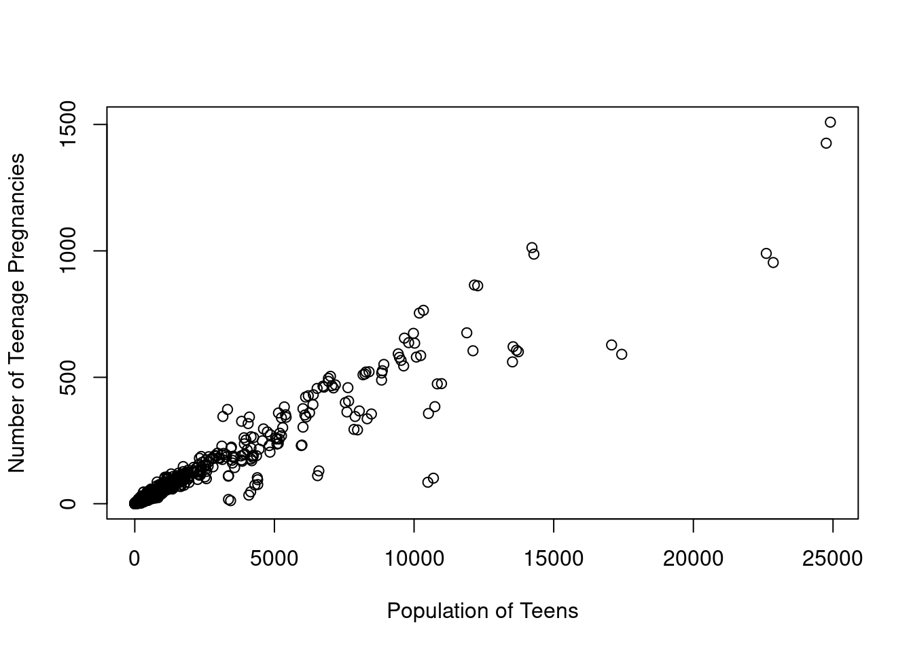
Finally, in this project we have two codes which will generate descriptive statistics and run econometric analyses. As our interest here is in illustrating a project structure we are leaving these largely blank, though in practice this may contain an important proportion of the code of our project.
#---|----1----|----2----|----3----|----4----|----5----|----6----|----7----|----8
# analysis.R damianclarke yyyy-mm-dd:2023-10-24
#
# This script conducts estimation of principal models... FURTHER DETAILS.
#
#
#
#-------------------------------------------------------------------------------
#--- (1) Regression models and so forth ...
#-------------------------------------------------------------------------------
print("Now running within analysis.R...")[1] "Now running within analysis.R..."